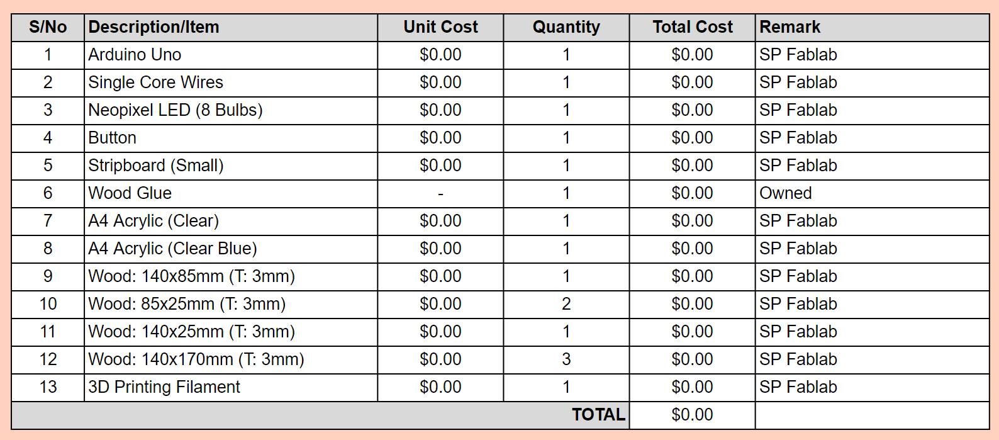

FINAL PROJECT
Documentation Process of my project
Developing Ideas
I had a few ideas like a moodlight, bookend/bookstand and phone charger/display. I ended up with making a moodlight.
References:
- [Nerdforge] WiFi Controlled RGB Desk Lamp - Simple DIY/Ikea Hack!
- [Nerdforge] DIY Neon Portal Bookends - They GLOW in the Dark!
#1 WIFI CONTROLLED RGB MOODLIGHT+BOOKEND
This was the #1 draft of my idea.
However, after getting advices from the lecturer, I decided not to do wifi and I could always modify it in the future.
Red: lecturer's suggestions
Green: what i changed
#2 RGB PORTAL MOODLIGHT+BOOKEND
Bill of Materials
Excel Sheet
I have made multiple changes to the items in the BOM as there were a change of plans. I had decided to go with the button for the final project instead. However, I realise I did not have the time nor materials to make both ends of the "bookend" so I went with just 1 of it. I also forgot to add in the button for the bill of materials so I placed it in the BOM below.
Final Bill of Materials
Excel Sheet
PROCESS
Planning
I planned the measurements and pieces I would need for my project.
(sorry, it's 3mm wood thickness instead of 4mm)
Getting the Designs Ready #1: Laser Cutting
On the way to creating the designs, I had a few ideas I could use to improve my project.
Since I can't laser cut thicker wood pieces, I decided to make 3 layers of wood for the backing to make it thicker and stronger. To make it better, I made 3 different designs for each layer so that I could hide the wiring.
Next are the base pieces. The top of the base would have engravings to make it seem like cracked floors.
The hole on one of the side pieces is for the insertion of the cable for powering of the arduino/mood light.
I then save it into PDF form to be ready for laser cutting. (not to scale)
3mm ply wood
3mm acrylic
The image above is for my portal part of the project.
The scribbles on top would be engraved as a type of portal design.
Left: Inner Portal (Clear Acrylic), Right: Outer Ring of Portal (Clear Blue)
Getting the Designs Ready #2: 3D Printing
I went on Thingiverse to use the templates as one of my designs.
Thingiverse: Wolf Head
I then open the .stl file downloaded from Thingiverse in Ultimaker Cura
Laser Cutting
Attempt #1
I did not adjust the measurements correctly for each of the pieces which resulted in different measurements for ALL of my pieces as seen in the picture. I had to redo the laser cutting again.
Also this was before I made some changes I realised I didn't put in like the hole for the cable plug in and the hole in the clear acrylic for the portal. I also adjusted the sizing of the pieces after looking at the 1st attempt.
Attempt #2
This time everything was good to go.
Changed the black acrylic to blue so that the light can shine through.
3D Printing
Attempt #1
The 3D print turned our fine except for the part where the supports for overhang were REALLY HARD to take off, some of them were left on the print as I couldn't pluck it out. I'm planning to see if I can print the wolf head again as I noticed some small holes and I wanted to make the wolf a little bigger as well as change the infill for the supports to make it easier to take out.
Assembling
Attempt #1
I realise I did not account for the difference in the measurements due to the thickness of the wood hence I tried to improvise. It will not affect my project greatly but it does pose some problems in terms of assembling the base with the back.
Glue used
Attempt #2
I recut the 2 side pieces to fix the base and everything fits nicely now. I used the some of the leftover unused pieces from the wrong measurements to make the circuits under the base to be elevated nicely.
I cut 2 slits at the side to fit the buttons in.
Neopixel LEDs (Circuits & Programming)
What I want
3 different light functions:
- Constant light of 5 different colours (warm white, red, green, blue, purple)
- Blue Breathing
- Purple Breathing
- Rainbow
Circuit
The circuit is fairly simple.

Programming
I'm not good with coding so I modified the code from Adafruit instead. I added in the Fade In and Out option. However, there were issues with the coding that I could not fix in time for submission.
Soldering
Soldering was a first for me. It was slightly challenging at first but I got the hang of it.

Decorating
Painting the outside
Decorating the Portal
Final Product
Here is how the final product looks like